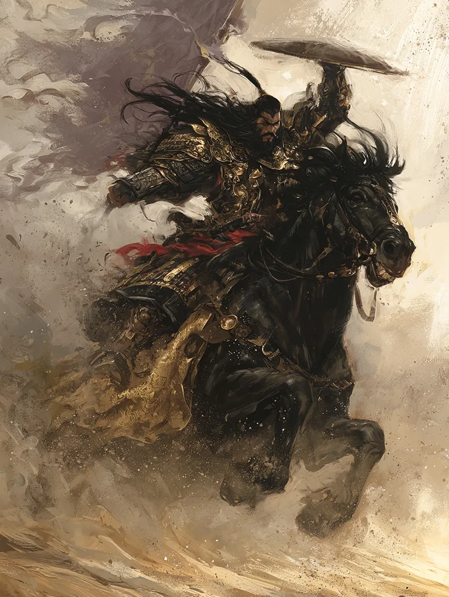
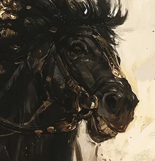

Renowned Warrior · strategic commander under Utaku Kamoko · Crab-trained and Unicorn-returned · husband to Doji Setsuna · prisoner of the Lion, sessions 2 to 48

Shinjo Harunobu is a Unicorn bushi who trained in a Crab school. He holds the Hida Battle Leader School at Rank 3, commands a specialised force within the Unicorn army, and serves Utaku Kamoko as both field commander and personal advisor. He is married to Doji Setsuna of the Crane. From the second session of the campaign until shortly before the forty-eighth he was a prisoner of the Lion.
His standing is martial rather than courtly. Status 35 places him well below his wife's 60; Glory 49 is the record of three engagements rather than of a name known at court. Honour 55 is the honour of a man who keeps his word and does not enjoy being asked to explain it.
The first thing anyone notices is his height. At six feet six he stands over almost every samurai in a room, which is an asset on a field and a nuisance in a chamber where the point is not to be looked at. Out of his helmet he ties his hair up with a purple ribbon, and it is a good one — the single piece of deliberate ornament he carries.
He left home for the Crab lands at about nine years old, one of nine children in a large and affectionate family, and did not come back the same. A Shinjo trained by the Crab is an unusual object: the school teaches fortification, attrition and the holding of a line, the opposite of the fast-strike cavalry doctrine his own clan is built on, and he came back carrying it. It makes him the Unicorn officer who can talk to Hida commanders, and it is why Kamoko keeps him near. Crab commanders respect him and consider him too soft for having returned to the Unicorn. He is fluent in two military traditions and fully at home in neither.
Direct to the point of bluntness. He solves problems by acting on them and regards his wife's professional instrument — argument, procedure, the correctly drafted document — as legal trickery. His paramount tenet is Courage; his least significant is Courtesy, and the ordering is not accidental. He disdains courtly manoeuvring and says so.
Under stress he goes sullen and withdraws, and he does it worst when the subject of the stress is himself. He is not evasive about other people's difficulties. He is unreachable about his own.
The Unicorn prize Compassion above the other virtues. Harunobu holds it subordinate to a shared objective — that mercy is something you can afford once the thing you came to do is done, and not before. He has acted on that reasoning at least once at a price he has never named.
Utaku Kamoko. Strategic commander in her forces, directing defensive operations when her fast-strike tactics need reinforcement, and trusted to lead independently when she must focus elsewhere. One of the few people she trusts to challenge her ideas without undermining her authority. Liaison to the Crab, keeping Unicorn supply lines open against the blunt and inflexible Hida. Current giri
He feels constrained by courts and by command. He wants men under his own command, particularly after the debacle with the Lion. Current ninjō
Endurance 12, Composure 10, Focus 5, Vigilance 2. Earth and Fire at 3 is a man who is hard to move and hits hard when he does; Vigilance 2 against his wife's 3 is the difference between a soldier and a courtier, and it is the number that explains most of what happens to him socially.
| Honor 55 | Keeps his word; dislikes being asked to justify it. |
| Glory 49 | Earned on three named engagements rather than at court. |
| Status 35 | A field commander's standing. His wife outranks him by 25. |
Hida Battle Leader School, Rank 3. He holds one title, Renowned Warrior (Fields of Victory p. 135), fully invested at 16 of 16 XP, which unlocks Behold the Legend. The title is the mechanical form of his Glorious Deeds passion: recognition by a commander of sufficient influence, spread across a province.
Martial Arts [Melee] 3, Tactics 3, Command 3, Survival 3. Martial Arts [Ranged] 2 and Sentiment 2. Fitness, Meditation and Courtesy at 1. Nothing in Artisan, Scholar or Trade beyond Survival. Four skills at 3 is a narrow, deep build: he fights, he plans, he orders, and he lives outdoors.
Fourteen, weighted to command and endurance rather than to duelling. His school ability is Thunderous Courage. Three shūji — Battle of No Escape, Fortress of Necessity, Great Anvil's Measure — are all about making a position hold. Five kata, including Striking as Earth and Striking as Fire. Three rituals of invocation: Beseech Akodo's Judgment, Beseech Hida's Might and Beseech Shiba's Calm, which is a Unicorn asking three other clans' ancestors for help and is worth noticing. One ninjutsu, The Patient Viper.
| Bishamon's Blessing | Distinction (Water) — Physical, Spiritual. |
| Indomitable Will | Distinction (Earth) — Interpersonal, Mental. |
| Glorious Deeds | Passion (Fire) — Martial, Social. |
| Fukurokujin's Curse | Adversity (Fire) — Mental, Spiritual. |
| Belligerent | Anxiety (Earth) — Interpersonal. |
| Superstition | Anxiety (Void) — Mental, Spiritual. |
Two anxieties against one adversity, and both anxieties fire in exactly the situations his ninjō puts him in: Belligerent when he is being managed, Superstition when the answer is not a material one. A man blessed by Bishamon and cursed by Fukurokujin is lucky in war and unlucky in wisdom, which is a fair summary of his career.
All 100 XP is spent, and where it went is the clearest statement of priorities on the sheet.
| 51 — Advancements | Earth, Fire and Void each raised to 3 at 9 apiece; Martial Arts [Melee] to 3; Command to 3; Tactics to 3; a single point of Courtesy. |
| 33 — Techniques | Eleven bought outside any curriculum, at 3 each — the three Beseech rituals, three shūji, three kata, the title ability and one ninjutsu. |
| 16 — Renowned Warrior | The title, fully invested: Righteous Example, Heartpiercing Strike, Command to 2 and Martial Arts [Ranged] to 2. |
Twenty-seven of the fifty-one advancement points went on rings, and every ring he raised was Earth, Fire or Void — endurance, force and composure, with nothing at all spent on Air or Water. He bought no Artisan, Scholar or Trade skill beyond Survival. This is a man who has never once spent experience on being better in a room.
Ten of his twelve possessions are the Hida Battle Leader starting outfit, item for item and unchanged: lacquered armour, travelling clothes, the daishō, two weapons of rarity 7 or lower — his tetsubō and horsebow — a finger of jade, a gunbai, the scrolls of battle tactics, and a travelling pack. He has added exactly two things to what the school issued him.
The first is a set of ceremonial clothes, which is what a man owns because his rank obliges him to attend things. The second is Three Victories, the scroll Akodo Masanari wrote out for him. A Rank 3 commander with a hundred experience spent and 400 zeni in hand is still carrying his school kit, and the only object on the list he chose for himself is a gift from a Lion asking whether he is following his own path.
Every shūji he owns raises the cost of moving him. Fortress of Necessity, Great Anvil's Measure, Battle of No Escape: the Crab school taught him that a position held is worth more than a charge landed, and he brought that back to a clan that believes the opposite. When Kamoko's cavalry cannot solve a problem, he is the alternative she reaches for.
He treats a problem as a thing to be met directly. This is his strength in the field and the whole of his limitation everywhere else — the same reflex that makes him useful to Kamoko is the one that keeps him from the command he wants, because the route to that command runs through courts he refuses to enter.
His tenets are ordered Courage paramount, Courtesy least significant. In practice this means he will take a risk that a more careful officer would decline and will not soften the report afterwards. It also means that when he is wrong he is wrong loudly, in front of people who will remember.
He rode into the Shadowlands alone and found Hida Ayame and what was left of her warriors making a last stand with their backs to a ravine, surrounded, with an oni among them tearing Crab samurai apart. There was no saving them all. There was only her.
He went in weaving, cutting only what stood between him and her, and he did not look at the dying because he could not afford to. He hauled Ayame across his saddle and turned to flee. The oni was too busy with the slaughter to notice him at first, and that — the sound of it, bones and roaring, a thing that has never left him — is what bought the seconds that mattered. He rode the horse past what it could bear and did not look back.
They reached safety. He did not collapse. He sat, and Ayame stirred beside him, and his body went on working. By his own account something of him stayed behind where the oni was feeding.
This is the load-bearing event of the character and it explains most of the sheet. It is why Compassion ranks below the objective. It is what the two anxieties are made of, and why one of them is Void. It is why a warm family finds their son a stranger. And it is a piece of arithmetic he performed correctly and has been unable to stop performing since: he traded the dying for the one he could reach, and it worked.
Hida Katsuro trained him and gave him four things: that hesitation is death; that war is not a duel, but overwhelming force, terrain and knowing when to cut losses; that tactics mean nothing without food, rest and supply; and that command is a burden rather than a privilege — if you want to be in charge, you better be ready to order men to their deaths. If you can't do that, stay in line.
He absorbed all of it and refused the conclusion. Katsuro treated soldiers as resources to be managed; Harunobu wants to lead from the front and take the risk first, which made Katsuro admire him and despair of him in the same breath. The question still runs underneath everything he wants: he wants command, and he does not want to become the man who taught him how to hold it.
His ninjō is not a want but a trap, and the export states all four walls of it. He believes his strategies are often more sound than Kamoko's, and must defer to her anyway. He watches her command and thinks that it should be him — with the specific justification that he understands both Unicorn and Crab doctrine and she does not. He feels that if she relies on him this much, he should be the one leading. And he knows that a politically capable samurai could manoeuvre himself into that command, and refuses to be one.
The last of those is the load-bearing one. His refusal to play the political game is, by his own reckoning, what is preventing his rise. He can see the door and will not use it because of what using it would make him.
The irony the campaign is built on: he is married to one of the most capable political operators in the Empire, considers her craft legal trickery, and owes his freedom to it. He is blind to how comprehensively she protects him. Whether that stays true is the most interesting question on this sheet.
Asked at Loyalty Castle what captivity would do to him, his wife said he would suffocate without the sky. She said it to keep a conversation warm and it was also true. He is a man who lives outdoors at Survival 3 and who spent forty-six sessions in a room.

A Moto Charger: hot-tempered breed known for strength, size, and explosive gallop, carrying heavily armoured lancers into battle but lacking stamina for prolonged journeys. Combat threat 3, Intrigue 1, demeanour Loyal. He is not a fast horse over distance and is not meant to be one.
The name is Moto rather than Rokugani — khar, black; baatar, hero — which is the register the Unicorn kept from the years outside the Empire, the same register that gives Shinjo Altansarnai her name. Naming a warhorse in it is a choice about which half of the clan's history a man stands in.
Mechanically he is a mount rather than a companion: he takes no turn of his own in a conflict, adds bonus successes equal to his Water Ring when his rider succeeds on a Movement action, and lets Harunobu substitute Survival for Fitness. His hooves are Range 1–2, Damage 7, Deadliness 6. He carries Brute Strength and Masterful Fighter as distinctions and Willful as his adversity — the charger's temper, written into the sheet.
Set against Kogarashi: hers is a white Utaku courser recognisable to any Unicorn rider at any distance, and it opened a castle gate at night because of it. His is a black charger bred to close the distance and hit. The two horses are an unusually direct statement of the two marriages-worth of temperament in this household.
He was taken at the Battle of the Hanto River, north of the Drowned Merchant River, in the second session. Nobody sent word to his wife; she learned it in passing at a Lion castle during a conversation about supply lines.
What follows is the spine of Setsuna's campaign and almost none of it was visible to him. A courtier at Loyalty Castle refused to write for his release and told her such requests belong after hostilities. Bayushi Monban obtained two letters confirming he was being treated honourably, and was then told to stop interfering. Kitsu Takeko moved his custody out of Okoto Sakuon's command on the strength of Akodo Akihito's service. He sent a gift wrapped in purple by a tired Unicorn messenger, and a parcel arrived where a prisoner did not.
He was freed two weeks before session 48, under safe conduct, on Kitsu Takeko's plea to Akodo Toturi — who volunteered the fact to Setsuna while accepting a gift of her husband's court clothes, and then said it seems I am in your debt. By the Lion's account he had fought well, had not fallen, was recovered, and his wounds were tended.
The debacle with the Lion named in his ninjō is this. It is also the reason he wants his own command: forty-six sessions of being a man things were done about.
Every point of his hundred is committed, and committed narrowly: three rings at 3, four skills at 3, and a title carried to completion. There is no reserve and no hedge. The next experience he earns is the first real choice he has had, and it arrives at the moment his ninjō has finally named what he wants.
His ninjō asks for men of his own. The obstacles are named in it: Kamoko's authority, his own refusal to manoeuvre, and now a captivity that will be read by some as a failure. The Unicorn's internal politics are live — Moto Gaheris wants primacy over the Shinjo and has suspended that contest only while the clan musters against something from outside — so there is a route to an independent command for a Shinjo officer who is willing to be political. He is the one man who will not take it.
He returns to a wife who spent the war becoming an Imperial arbiter, who has stacked Toshi Ranbo, the Phoenix claim and a missing woman onto a single Winter Court, and whose method he does not respect. Everything he owes he owes to obligations she arranged and he never saw. Whether he ever learns that is the question the character is actually pointed at.